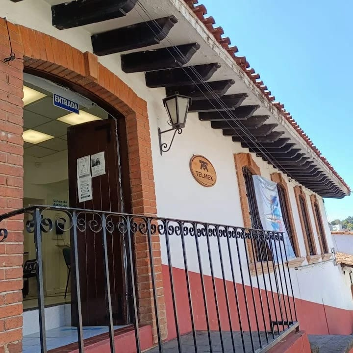
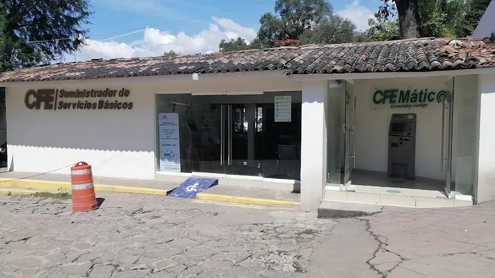
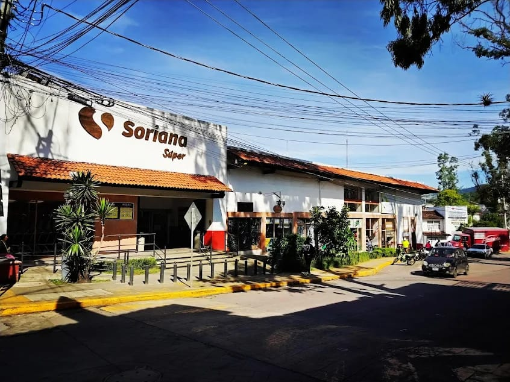
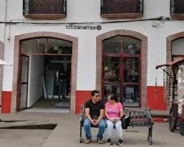
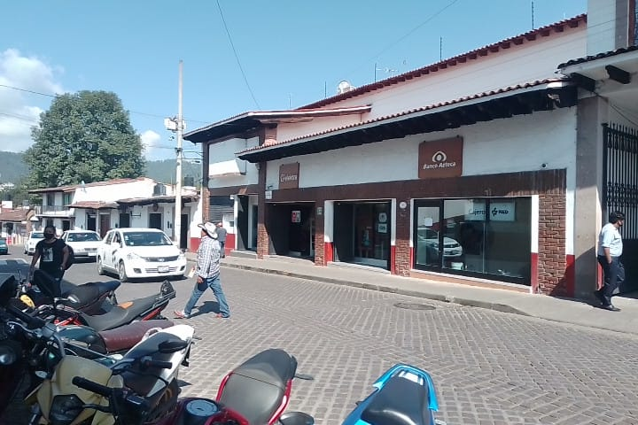

Centro de Servicios Telmex
Dirección: 16 de Septiembre 204 Centro, 51200 México, Mexico.
Servicios: Pago de internet y telefonia telmex.
Tel: 800 123 2222
Oficina / módulo CFE — Valle de Bravo
Dirección aproximada: Calle Ameyal, Barrio Santa María Ahuacatlán, Valle de Bravo (oficina CFE local).
Servicios: Pago de recibos de luz, reportes y atención.
Tienda Soriana
Servicios: Resibo de agua, Electricidad, Telefono fijo o movil, Gas
Direccion: Avenida Benito Juarez 120, San Antonio, Barranca Seca, 51200 Valle de Bravo, Méx
Sucursales bancarias y cajeros (apoyo para pagos electrónicos)
Banamex, HSBC, Banorte y otros bancos con sucursal o cajeros en el centro pueden servir para pagos o retiros.
Ejemplo: Plaza De La Independencia S/N, Avandaro, 51200 Valle de Bravo, Méx.
Banco Azteca
Pagos: Transferencias, Agua, Luz, Telefono.
Dirreccion: Avenida Benito Juarez Garcia 486, 51200 Valle De Bravo.
Horario: Lunes a Domingo (9:00am– 9:00pm).
